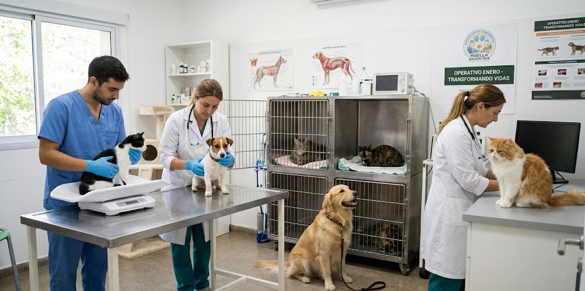
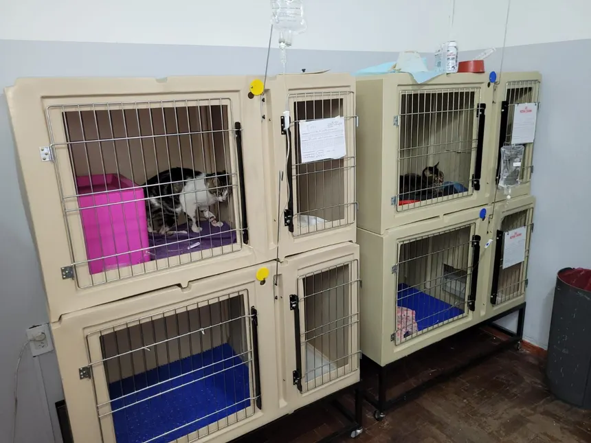

Enero nos puso a prueba como nunca antes. En el lapso de una sola semana, nuestro equipo de rescate tuvo que intervenir en múltiples casos críticos, logrando poner a salvo a 12 animales que se encontraban en situación de calle, abandono o maltrato grave.

La clínica de la fundación funcionó a su máxima capacidad. Cada uno de los 12 pacientes ingresó con un cuadro clínico diferente: desde fracturas no tratadas y desnutrición, hasta enfermedades infecciosas complejas. Fue un despliegue logístico y médico enorme que requirió guardias de 24 horas, decenas de estudios, medicación constante y muchísimo amor.
Hoy nos enorgullece contar que el esfuerzo dio sus frutos. Todos recibieron el alta médica y 10 de ellos ya disfrutan del amor de una familia definitiva. Sin embargo, la misión aún no termina: tenemos 2 vacantes de esta camada que siguen esperando su oportunidad. Son sobrevivientes increíbles que ya están listos para dar todo el amor que tienen guardado. ¡Ayúdanos a completar este círculo de rescate adoptando o compartiendo sus perfiles!
Quiero adoptar